Na história
A ordem do plantio: preparar a terra, semear, regar, colher
Na programação
Sequência
um algoritmo é uma série de passos executados em ordem.O despertar da programação
TecnoArte é um projeto de extensão do IFMA — Campus Santa Inês que transforma conceitos de programação em uma história em quadrinhos, unindo saberes tradicionais indígenas e pensamento computacional para estudantes da educação básica.
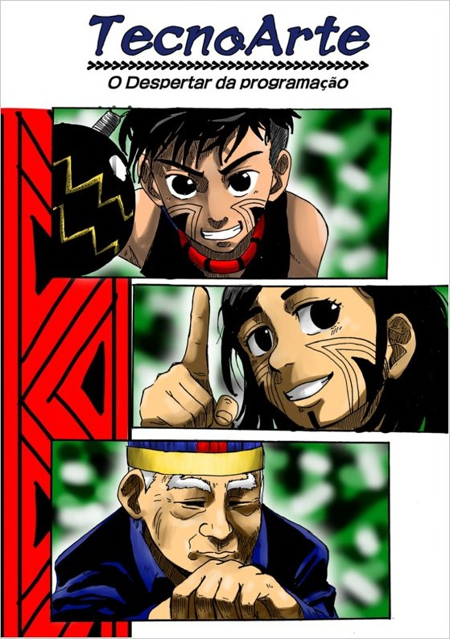
O projeto
O elo do projeto Mangá, aulas presenciais e práticas pedagógicas conectam programação, robótica, cultura e educação.
O TecnoArte: Robótica, Programação e Cultura por meio de Mangás Educativos é um projeto de extensão do IFMA — Campus Santa Inês que aproxima o pensamento computacional de contextos culturais indígenas. A proposta utiliza narrativa, ilustração e situações da vida na aldeia para apresentar conceitos de lógica de programação de forma didática, criativa e culturalmente situada.
O mangá acompanha personagens da Aldeia Januária, na Terra Indígena Rio Pindaré, como Tapixi, Zahy e Tàmuz. Ao longo das histórias, conceitos como linguagem, entrada e saída de dados, variáveis, condições, laços de repetição e funções são apresentados por meio de situações ligadas à natureza, aos ciclos da vida e aos saberes da aldeia.
Além do material teórico — o próprio mangá — o projeto integra ações práticas e pedagógicas desenvolvidas pelos estudantes dos níveis médio e superior. As aulas presenciais acontecem no IFMA Campus Santa Inês: crianças e jovens da comunidade Guajajara próxima ao campus vêm até a escola para participar das atividades, conectando programação, robótica, cultura e educação.
A história
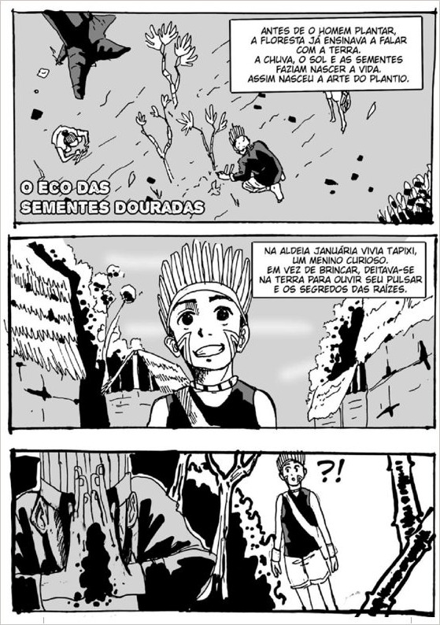
O mangá acompanha Tapixi, Zahy e Tàmuz na Aldeia Januária, na Terra Indígena Rio Pindaré. A narrativa parte de situações do cotidiano e dos saberes da aldeia para criar uma ponte com o pensamento computacional.
A história começa com O Eco das Sementes Douradas, que apresenta a ideia de linguagem e o ciclo de entrada, processamento e saída por meio da metáfora das sementes. Nos capítulos seguintes, a narrativa explora variáveis, condições, laços de repetição e funções, sempre relacionando os conceitos de programação aos acontecimentos e aos elementos da natureza presentes na história.
O resultado é um material teórico que não separa completamente tecnologia e cultura: a programação aparece dentro da narrativa, enquanto os personagens aprendem a observar, organizar ideias, tomar decisões e compreender processos. O mangá foi pensado para introduzir esses conteúdos de maneira leve, significativa e culturalmente situada.
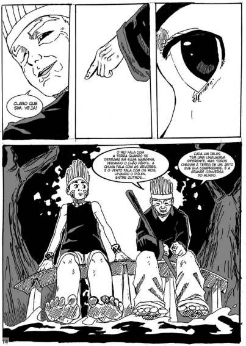
Da vivência ao código
Uma jornada visual entre os acontecimentos da narrativa e as ideias que a programação ajuda a organizar.
A ordem do plantio: preparar a terra, semear, regar, colher
Sequência
um algoritmo é uma série de passos executados em ordem."Se chover, a semente brota; se não, ela espera"
Estruturas condicionais
decisões que mudam o resultado.As estações que se repetem a cada ciclo de plantio
Repetição (laços)
ações que se repetem sob uma condição.Tapixi escuta a terra para entender por que algo não brotou
Depuração
observar, testar e corrigir um processo passo a passo.O saber transmitido pelos mais velhos, aldeia após aldeia
Documentação
registrar o raciocínio para que outros possam reutilizá-lo.Traços, histórias e descobertas
Um passeio pelas imagens do mangá e pelo universo visual criado para aproximar programação, narrativa e cultura.
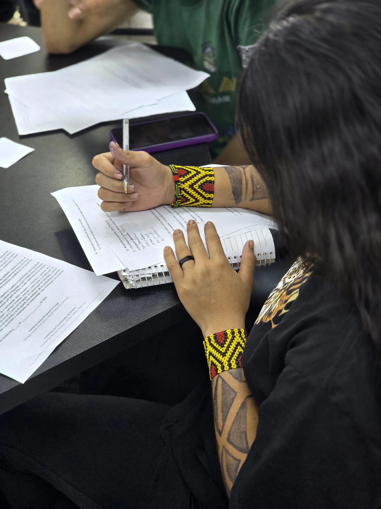
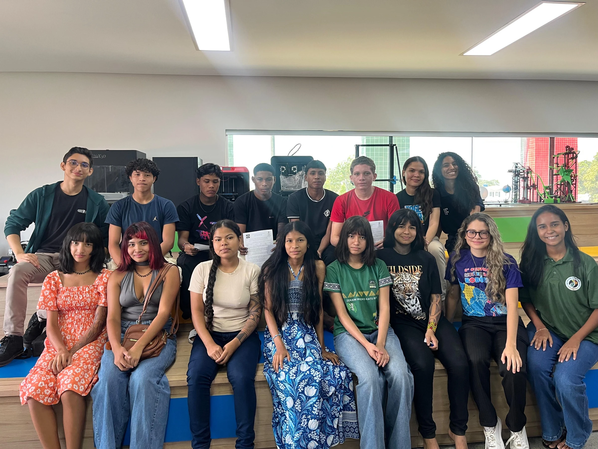
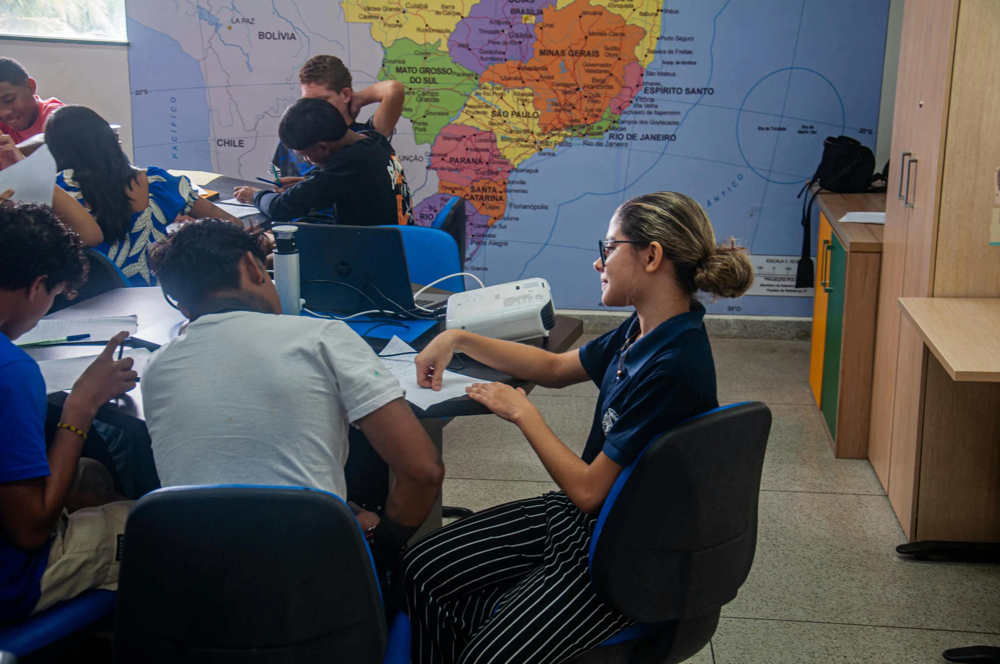
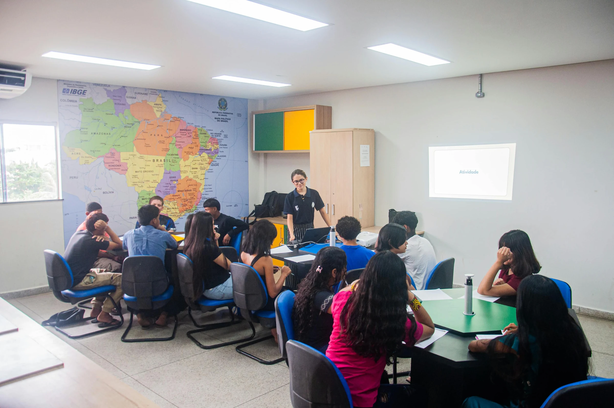
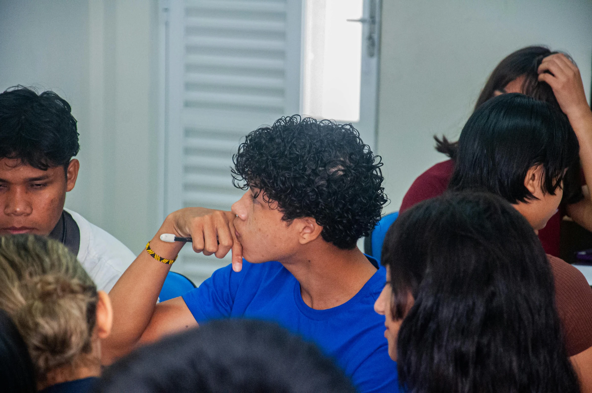
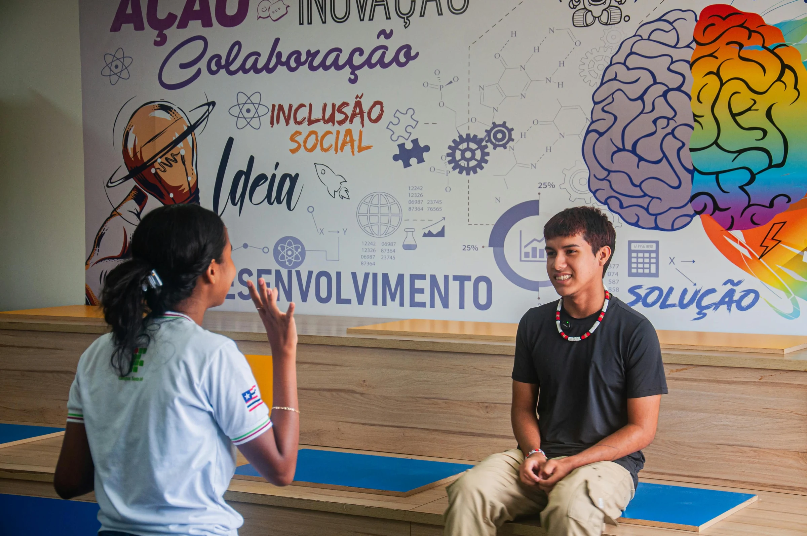
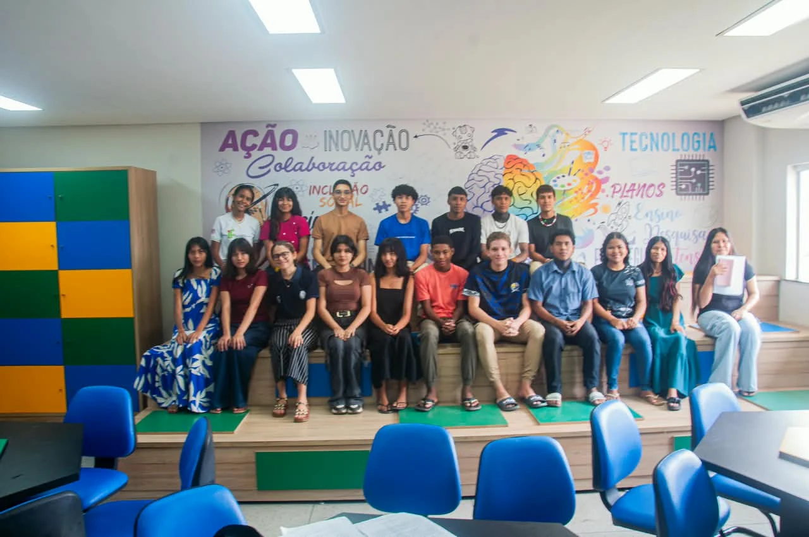
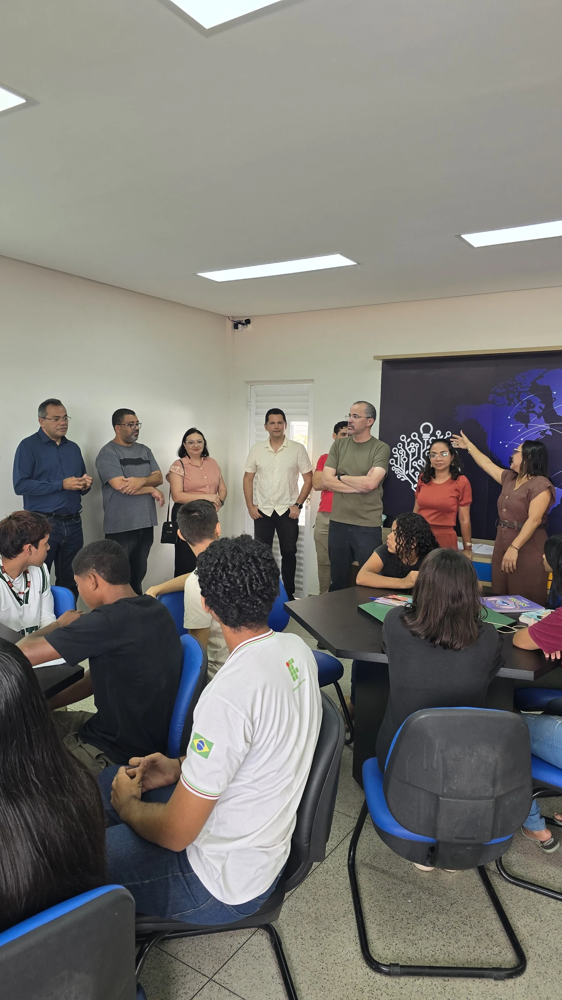
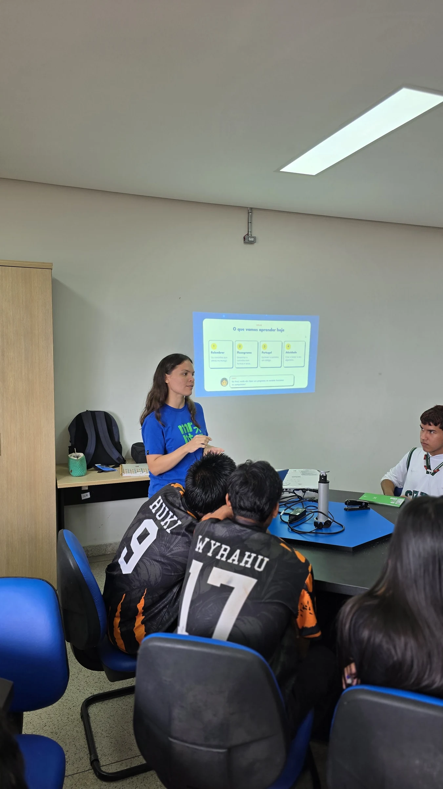
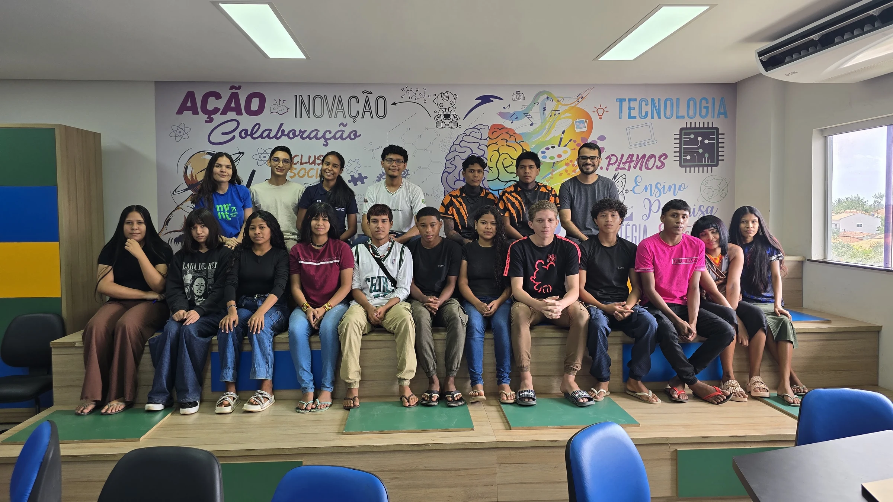
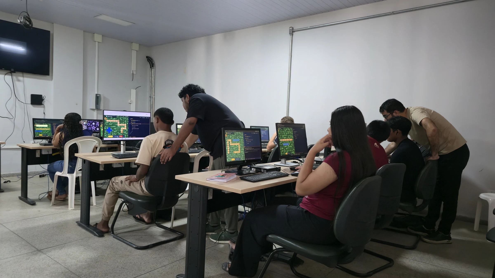
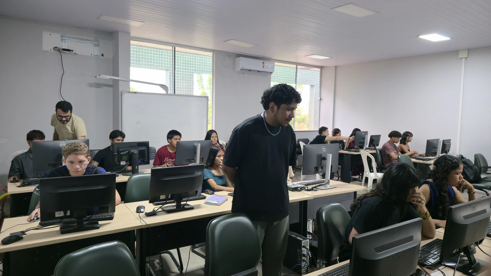
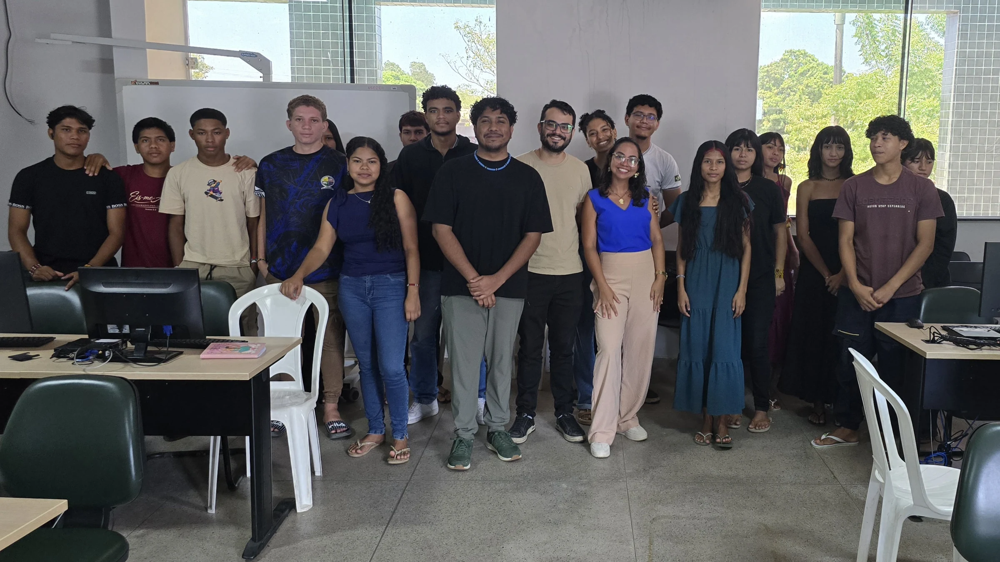
1 / 17
Créditos
Uma criação coletiva que reúne orientação, ilustração, roteiro e colaboração estudantil.
Orientação
Ilustração
Apoio institucional
Uma rede de educação, pesquisa e criação que torna o projeto possível.
Instituição responsável pela ação de extensão, disponibilizando orientação pedagógica e estrutura para o desenvolvimento coletivo do projeto.
Núcleo de Estudos Afro-Brasileiros e Indígenas do IFMA, parceiro na construção do olhar cultural e na revisão da temática indígena da narrativa.
O projeto foi idealizado e desenvolvido pela equipe de robótica Robotic Orion, do Campus Santa Inês, com a participação de seus integrantes e a colaboração de alunos do campus, que contribuíram para diferentes etapas de sua concepção, desenvolvimento e execução.
Marcas do projeto
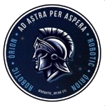
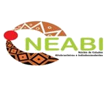